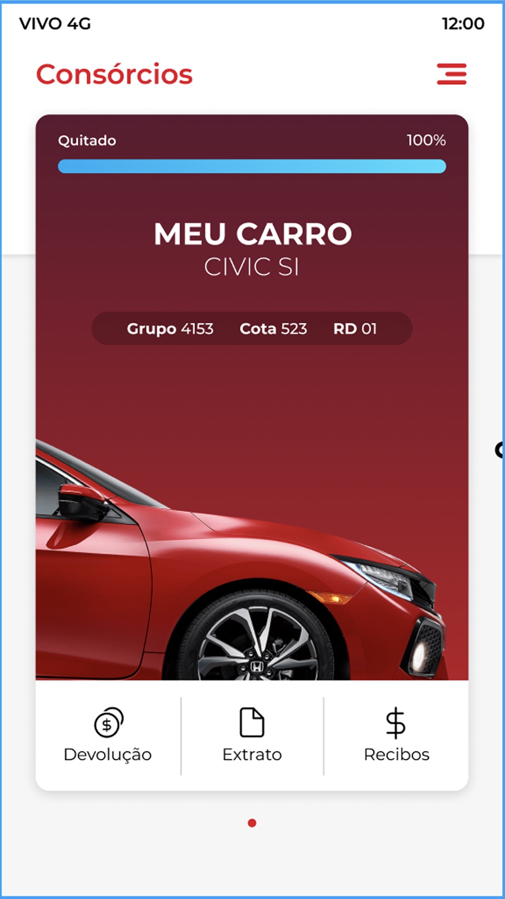
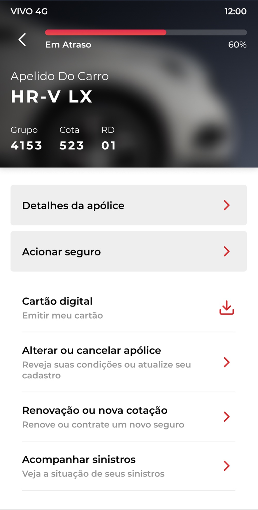

HSF Financial Services
Um redesign das telas de consórcio do app mobile da HSF: o cartão que as pessoas veem primeiro e a tela de detalhe por trás dele. Esta página compara as telas antes e depois, lado a lado ou com um controle deslizante, e mostra a folha de componentes de que a nova versão é feita.
- ClienteHSF
- PlataformaApp mobile
- Idioma da interfacePortuguês (Brasil)
- Períodofev 2021 – jul 2021
- Meu papelDesign UX/UI na Venturus


Contexto
Um app de serviços financeiros para veículos que já vinha sendo trabalhado antes de eu entrar. O problema era principalmente a organização dos protótipos e a falta de componentes para os ativos de design.
Plano
Criei um plano para organizar e refatorar partes da UI.
Design system
Criei um design system inicial para o app, remapeei todas as telas já desenhadas e planejei os componentes para elas.
Processo
Melhorei a UX das próximas funcionalidades e criei um processo para o desenvolvimento da UI.
O que o redesign busca
Status em primeiro lugar
A barra de progresso continua no topo do cartão, e o rótulo que a explica, como “Em atraso 60%”, agora fica logo abaixo da barra.
Mais fácil de ler
O texto fica alinhado à esquerda e Grupo, Cota e RD viraram um rótulo sobre um valor, no lugar de uma pílula centralizada.
Um jeito claro de abrir mais
Uma barra “Expandir” sobre a base da foto avisa que o cartão abre, e as ações abaixo dela são menos e mais claras.
Um detalhe que vai ao ponto
A foto vira um cabeçalho desfocado, então a lista de ações começa mais acima e comporta mais do que as pessoas precisam.
Fluxo
O caminho não mudou: do carrossel de cartões aos detalhes de um produto.
Consórcio
O cartão
A primeira tela do fluxo: um cartão por produto, com status, dados e ações rápidas. Arraste a alça para comparar, ou mude para lado a lado.
DepoisO que mudou
- Cabeçalho. O título vermelho “Consórcios” vira um título preto “Consórcio”.
- Status. Barra de progresso no topo, com o status e a porcentagem agora abaixo dela.
- Nome e dados. O apelido e o modelo centralizados, mais uma pílula com Grupo, Cota e RD, viram texto alinhado à esquerda com rótulos sobre valores.
- Foto. O veículo vai até a borda de baixo e leva uma barra “Expandir”.
- Ações. Três ações (Devolução, Extrato, Recibos) dão lugar a duas (Extrato, Ofertar lance), cada uma com seu ícone e um divisor.
A tela de detalhe
O que abre ao tocar em Expandir: o produto, seu status e a lista do que dá para fazer com ele.
 Antes
Antes
DepoisO que mudou
- Cabeçalho. Uma foto inteira com título e ícone de edição vira uma foto desfocada atrás da barra de status, do nome e dos dados.
- Linhas principais. Duas linhas cinza continuam no topo da lista: Devolução de valores e Próxima assembleia viram Detalhes da apólice e Acionar seguro.
- Lista secundária. Três itens (Extrato, Recibos de pagamento, Assembleias) viram quatro (Cartão digital, Alterar ou cancelar apólice, Renovação ou nova cotação, Acompanhar sinistros), cada um com uma descrição de uma linha.
- Ícones. As setas continuam, e Cartão digital ganha um ícone de download porque emite um arquivo.
Componentes
A folha de que a nova versão é feita: cada layout do cartão de ações e o cartão de progresso em cada status. Clique para ampliar.
Folha de componentes 3 colunas
À esquerda: o cartão de ações com três, duas ou uma ação. No centro: o cartão de progresso em cada status. À direita: a lista vertical de todas as ações.
Ações na folha
Treze ações, cada uma com ícone e rótulo curto, combinadas de três em três conforme o estado do produto.
Pagamentos e documentos
Pagamentos, Meu Contrato, Extrato, Recibos, Detalhes.
Lances e assembleias
Ofertar lance, Editar lance, Contemplação, Antecipar parcelas, Devolução de valores.
Seguro e reativação
Acionar, Renovar seguro, Reativar consórcio.
Cores de status
Cada status tem sua cor de barra; as cores abaixo são aproximadas, lidas da folha.
Em andamento · AtivoEm atraso · CobrançaContemplado · Quitado · Vigência encerradaCancelado · Contemplado excluídoCréditos e pendências
Créditos
Design UX/UI: David Smith, na Venturus.
Pendências
As telas de antes e depois mostram veículos e status de exemplo diferentes (um Civic quitado e um HR-V atrasado), então compare o layout e a estrutura, não os dados. As diferenças listadas são o que dá para ver nas telas, não um registro das decisões por trás delas. Não há protótipo ao vivo nesta página.